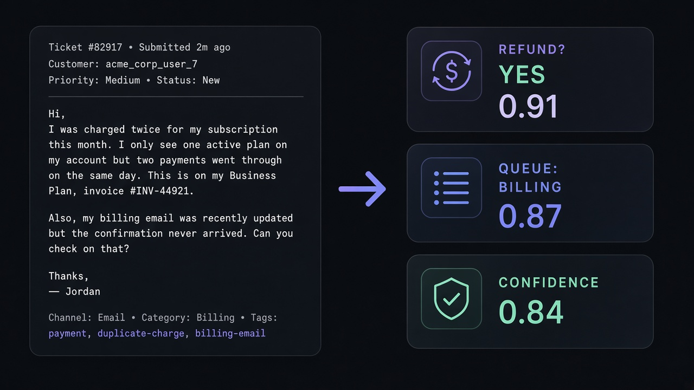

一、先说热点：X 最近在聊 Jev
这几天刷 X，AI 圈里反复冒出来的一个名字是 Jev（有人听成 Dev、GVE、jve，其实是同一个东西）。
它不是又一个「更会聊天」的新产品故事。大家吵的点很集中：
- 它是什么：TypeSafe AI 发布的一个 AI 模型（model），官方归类叫 System One
- 它干什么：不做长篇回答；做「带概率的判断」——有多确定、有多不确定
- 谁带的节奏：创始人 Diogo Almeida（前 OpenAI）自己发线讲取舍，浏览量到了百万级
- 旁边还有两拨人：一拨在跟开源复刻（比如 Bespoke Nimble）；一拨在实测「所谓校准概率到底准不准」
所以热点一句话：
X 最近在热的是一个叫 Jev 的模型——专门回答「确定还是不确定」，不是陪你聊天的那种。
相关帖可以点开看：
二、一句话：Jev 是什么
Jev 是一个做「判断」的 AI 模型，不是聊天机器人。
英文关键术语可以记这两个：
- 概率 / Probability：它认为某个答案有多可能
- 置信度 / Confidence：它自己这次有多笃定（越尖越稳，越散越该犹豫）
你给它一段现场情况，再问几个「封闭式问题」。
它不写小作文，直接吐结果：是/否、选哪个、打几分——并且带上把握大小。
三、小白例子：它到底在干什么？
别管架构了。想一个客服场景就够。
顾客发来一封邮件：
「我被扣了两次款，发票号 INV-44921，请处理。」
人肉客服会想三件事：
- 要不要退款？
- 该进账单组还是技术组？
- 这次判断靠不靠谱，能不能自动处理？
丢给普通聊天模型，它可能写一段很礼貌的回复，听起来很懂。
但软件真正要的，不是这段话——是三个能执行的开关。
丢给 Jev，更像这样（示意）：
| 问题 | 它可能返回 | 人话 |
|---|---|---|
| 要不要退款？ | 是，概率 0.91 | 九成像要退 |
| 进哪个队列？ | Billing 0.87 | 更像账单问题 |
| 这次有多有把握？ | confidence 0.84 | 比较稳，可以考虑自动走 |
然后代码很好写：
- 把握高 → 系统自动分流 / 自动退
- 把握低 → 转人工，别硬装懂

再换成别的场景也一样：
- Agent 要不要调用「删数据」工具？没把握就拦住
- 内容审核查不查？确定的自动过，不确定的进人工
- 给别的大模型「阅卷」：它写完了，Jev 来判要不要放行
所以 Jev 干的事，用人话讲就是：
在一堆「要不要自动做」的关口，替你说清楚——这次有几成把握；没把握就别硬冲。
四、它怎么用、在哪用
怎么用（概念三步）
- 准备 状态 / State：邮件、工单、日志、对话……
- 预先写好 问题类型：是/否（Boolean）、单选（Choice）、打分（Score）
- 一次调用拿回概率和置信度，再用阈值决定「自动」还是「转人」
在哪用
- 官网介绍
- 文档
- Vercel AI Gateway 模型名：
typesafe-ai/jev
Vercel AI Gateway 更新说明
适合：客服分流、风控打分、Agent 安全门、审核预筛。
不适合：写文案、写代码、闲聊——那些还是交给聊天大模型。
五、为什么这件事值得盯
过去两年大家默认：更强 AI = 更会写。
Jev 提醒另一面：很多软件不需要作家，需要裁判。
裁判的价值是——没把握时敢说没把握。这样自动化才接得进真业务。
X 上又有开源跟进、又有校准质疑，说明这个品类开始能打、也能验，不只是热搜名词。
六、带走一句
Jev = X 上最近在热的一个「判断模型」：不陪聊，只告诉你这次有多确定、多不确定。